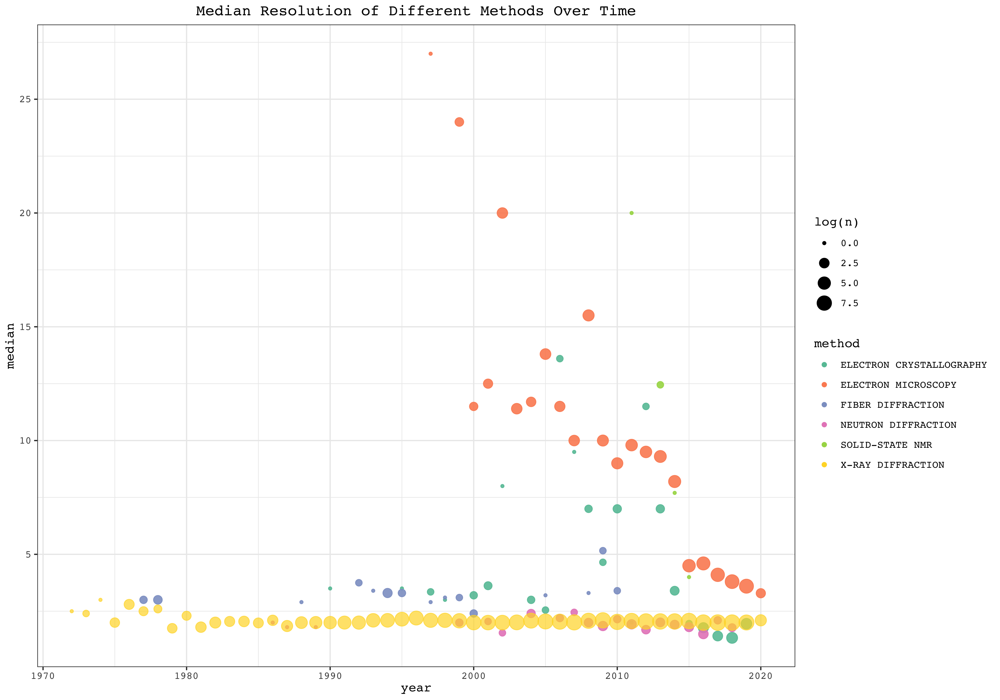
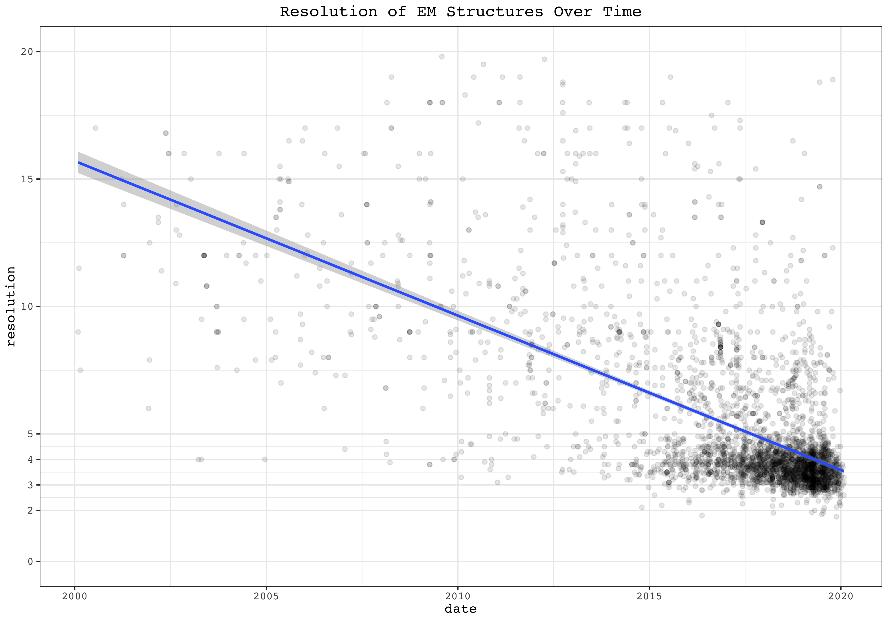
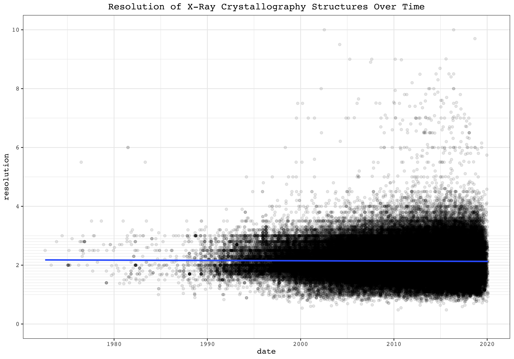
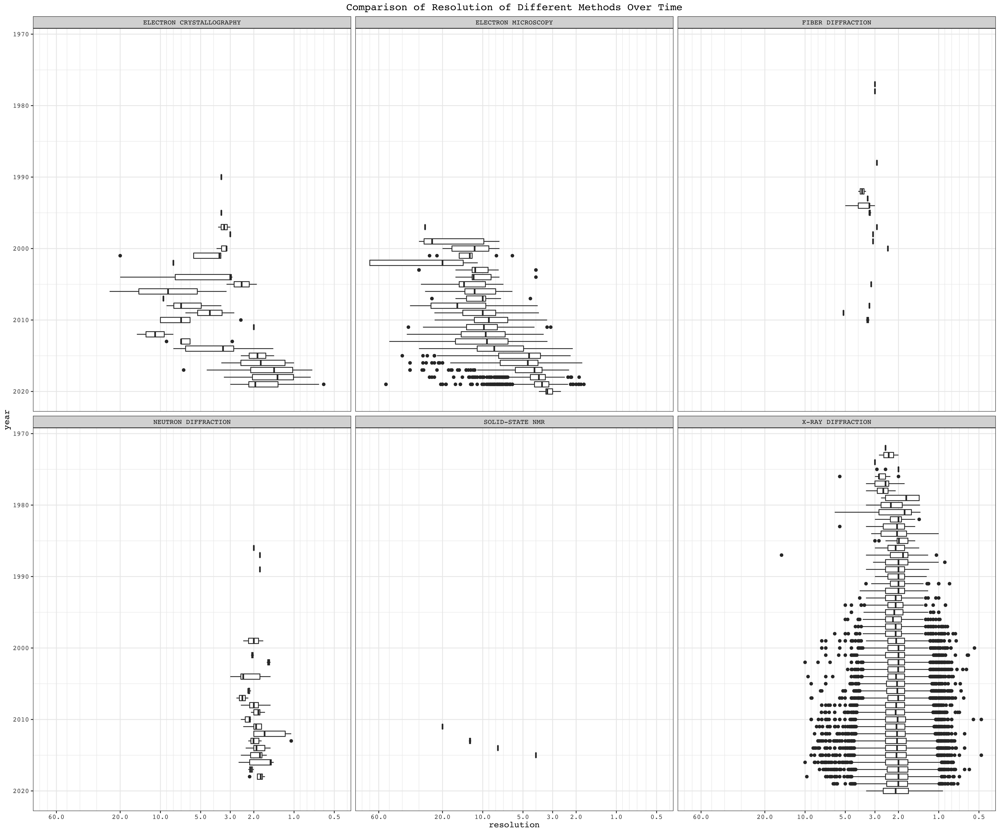
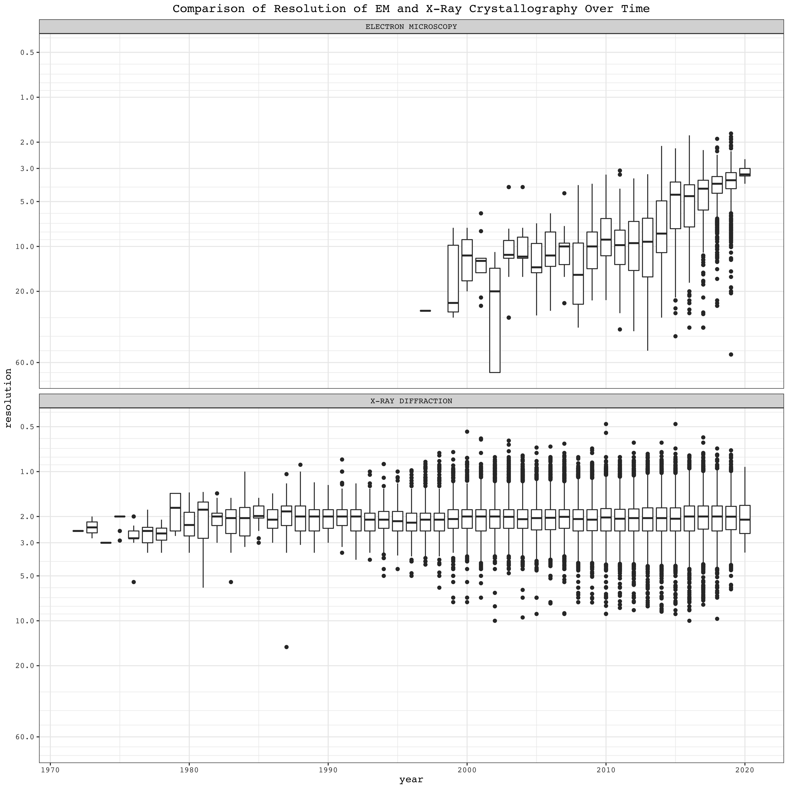

Last week I wrote an essay on electron microscopy (EM) and X-ray crystallography. I originally thought X-ray’s superiority in resolution has always been unrivalled, but the situation is changing—the best resolution achived by cryo-EM is now comparable with the average/median resolution achived by X-ray crystallography, which is around 2.3Å (this resolution allows for unambiguous identification of most amino acid residues in proteins). Recently it’s even reported that 1.75Å resolution has been achieved using cryo-EM, which really struck me. Thus, I was motivated to visualise the resolution revolution of cryo-EM. This article is a record of how I downloaded all PDB files from the protein data bank and did some simple analyses on them.
1 Getting All the PDB Files
All the PDB files are available via PDB’s FTP server. Simply cd to a directory and use wget to download all of them.
mkdir pdb; cd pdb; mkdir compressed decompressed; cd compressed
wget ftp://ftp.wwpdb.org/pub/pdb/data/structures/all/pdb/*Depending on the traffic, The first download will take 2~4 days. After the first download, to sync the local database with the FTP server, add the -N option to wget (essentially this means downloading “new” files only).
The *.ent.gz files downloaded are compressed. You can use gunzip to decompress them to ready-to-use *.ent files (which is written in PDB format), but that will remove the *.gz files, which is inconvenient if you want to keep your database in sync with the remote. Use gzcat (or equivalently gunzip -c) instead to preserve the *.gz files while decompressing:
find . -name "*.gz" | xargs -I{} -n1 bash -c '
src={}; dst=../decompressed/$(basename ${src%*.gz})
[ -f $dst ] && echo "$dst already exists, skipping..." || ( gzcat -cv $src > $dst )'You can monitor the progress from the verbose output of gzcat:
./pdb1byf.ent.gz: 78.1%
./pdb1byg.ent.gz: 76.3%
./pdb1byh.ent.gz: 77.3%
./pdb1byi.ent.gz: 75.2%
...2 Parsing PDB files
The decompressed *.ent files are in accordance with the PDB format specification, which is accessible here. Many ready-to-use PDB parsers are available, such as in BioPython’s PDB module. However, I am only interested in three variables: experimental technique, resolution and date, and it would be a overkill to parse entire PDB files using those standard parsers. Instead, I manually wrote a parser (with python) with reference to the format specification:
#!/usr/bin/env python3.8
import sys
for fn in sys.argv[1:]:
with open(fn) as f:
HEAD = f.readline()
date, id = HEAD[50:59], HEAD[62:66]
while True:
line = f.readline()
if line[:6] == 'EXPDTA':
method = line[10:].rstrip()
if line[:6] == 'REMARK':
if line[11:22] == 'RESOLUTION.':
resolution = line[23:30] if line[31:40] == 'ANGSTROMS' else 'NA'
break
print(','.join([id, date, resolution, method]))Then I parsed the data, 100 files at a time (took 25 min in total):
echo "id,date,resolution,method" > date_method_resolution.csv
find decompressed -name '*.ent' | xargs -n100 ./parse >> date_method_resolution.csvTo see whether it is Python that causes this operation slow, I used Go to rewrite the parser:
Expand to view
package main
import (
"bufio"
"fmt"
"os"
"strings"
)
func check(e error) {
if e != nil {
panic(e)
}
}
func main() {
for _, arg := range os.Args[1:] {
f, err := os.Open(arg)
check(err)
b1 := make([]byte, 81)
f.Read(b1)
check(err)
fmt.Print(string(b1[50:59]) + "," + string(b1[62:66]) + ",")
scanner := bufio.NewScanner(f)
var method string
var resolution string
for scanner.Scan() {
var line string
line = scanner.Text()
if line[:6] == "EXPDTA" {
method = strings.TrimSpace(line[10:])
}
if line[:6] == "REMARK" {
if line[11:22] == "RESOLUTION." {
if line[31:40] == "ANGSTROMS" {
resolution = strings.TrimSpace(line[23:30])
} else {
resolution = "NA"
}
break
}
}
}
fmt.Println(resolution + "," + method)
if err := scanner.Err(); err != nil {
panic(err)
}
}
}
And it turns out that Go achived a similar speed as Python, meaning the speed is limited by the file system I/O instead.
The csv file looks like this:
| id | date | resolution | method |
| ---- | --------- | ---------- | ----------------- |
| 100D | 05-DEC-94 | 1.90 | X-RAY DIFFRACTION |
| 101D | 14-DEC-94 | 2.25 | X-RAY DIFFRACTION |
| 101M | 13-DEC-97 | 2.07 | X-RAY DIFFRACTION |3 Data Analysis with R
3.0.1 Prerequisites
First, load the required packages:
library(tidyverse)## ── Attaching packages ──────────── tidyverse 1.3.0 ──## ✓ ggplot2 3.2.1 ✓ purrr 0.3.3
## ✓ tibble 2.1.3 ✓ dplyr 0.8.4
## ✓ tidyr 1.0.2 ✓ stringr 1.4.0
## ✓ readr 1.3.1 ✓ forcats 0.4.0## ── Conflicts ─────────────── tidyverse_conflicts() ──
## x dplyr::filter() masks stats::filter()
## x dplyr::lag() masks stats::lag()library(lubridate)##
## Attaching package: 'lubridate'## The following object is masked from 'package:base':
##
## datelibrary(scales)##
## Attaching package: 'scales'## The following object is masked from 'package:purrr':
##
## discard## The following object is masked from 'package:readr':
##
## col_factor3.1 Load Data
Parse the csv data file with readr::read_csv(). It is a good practice to specify the data type of each column (c means ‘character’, d means ‘double precision floating number’). Note the date column cannot be directly parsed, and it should be read as a character column and parsed by lubridate::date() in a separate step. The entries without resolution data are filtered out.
pdb <- read_csv('./src/pdb/date_method_resolution.csv',
col_types = 'ccdc') %>%
mutate(date = dmy(date)) %>%
filter(!is.na(resolution))3.2 Tidying Data
Note that some entries have more than one experimental methods, and individual columns are separated by semicolons, meaning there could be something like X-RAY DIFFRACTION; ELECTRON MICROSCOPY; SOLUTION NMR in the method column. The following code convert such entries into entries each with the first method of the original, dropping the rest:
single_method <- pdb %>% filter(!str_detect(method, ';'))
multiple_method <- pdb %>% filter(str_detect(method, ';'))
pdb <- bind_rows(single_method, do.call(bind_rows,
lapply(1:length(multiple_method[[1]]),function(i) {
original_row = multiple_method[i,]
mutate(original_row, method=str_split(original_row[['method']], '; ')[[1]][1])
}
)
))You can also use a for loop (shown below) to bind new rows to pdb, but this is noticeably slower than the lapply() and do.call() equivalent (shown above). In R, use those vectorised and highly efficient functions whenever possible (they should be able to replace almost all for loops).
pdb <- single_method
for (i in 1:length(multiple_method[[1]])) {
original_row = multiple_method[i,]
bind_rows(pdb, mutate(original_row, method=str_split(original_row[['method']], '; ')[[1]][1]))
}3.3 Plotting
I used the ggplot2 package for plotting.
3.3.1 Plot Setup
ggplot2::theme_set() sets global themes for all plots.
ggplot2 doesn’t have a built-in reverse_log10 scaling, which will be needed, so I used scales::trans_new() to make this.
theme_set(
theme_bw()+
theme(
text = element_text(family = 'Courier'),
plot.title = element_text(hjust = 0.5)
)
)
reverselog_trans <- function(base = exp(1)) {
trans <- function(x) -log(x, base)
inv <- function(x) base^(-x)
trans_new(paste0("reverselog-", format(base)), trans, inv,
log_breaks(base = base),
domain = c(1e-100, Inf))
}3.3.2 Median Resolution of Different Methods Over Time
This plot shows the median resolution of different structure-solving methods every year. Size represents log(number_of_cases).
pdb %>% mutate(year = year(date)) %>%
group_by(year, method) %>%
summarise(
median = median(resolution, na.rm = TRUE),
n = n()) %>%
mutate( alpha = ifelse(method=='X-RAY DIFFRACTION', 'A', 'B')) %>%
ggplot(aes(year, median, color=method, size=log(n), alpha=alpha))+
geom_point()+
scale_y_continuous(breaks = seq(0,25,5))+
scale_alpha_discrete(range=c(0.7, 0.9), guide=FALSE)+
labs(title='Median Resolution of Different Methods Over Time')+
scale_color_brewer(palette = 'Set2')
3.3.3 All Cases of X-Ray and EM Structures
These plots show the resolution and date of all cases as dots of EM and X-Ray Crystallography, respectively. Linear fits are added.
ggplot(filter(pdb, method =='ELECTRON MICROSCOPY', date>ymd(20000101), resolution < 20), aes(date, resolution))+
geom_point(alpha=0.1)+
labs(title = 'Resolution of EM Structures Over Time')+
scale_y_continuous(limits = c(0, 20), breaks = c(2, 3, 4, seq(0, 20, 5)), minor_breaks = c(7.5, 12.5, 17.5, seq(2, 5, 0.5)))+
geom_smooth(method = 'lm')
ggplot(filter(pdb, method =='X-RAY DIFFRACTION'), aes(date, resolution))+
geom_point(alpha=0.1)+
scale_y_continuous(limits = c(0, 10), breaks = seq(0, 10, 2), minor_breaks = c(seq(1,9,2), seq(1,3,0.1)))+
geom_smooth(method = 'lm')+
labs(title = 'Resolution of X-Ray Crystallography Structures Over Time')
EM structures show a strong trend of improvement in resolution over time. For X-Ray crystallography, however, although the maximum resolution improves over time, the number of published low-resolution structures also increases, making the median virtually unchanged over time.
3.3.4 Boxplots
Boxplots summarise the resolution, grouped by year, of different structural biology methods. Here the reverse_log10 scale is used, so that lower resolution values correspond to ‘high positions’ in the plot, which is more intuitive:
boxPlotScale = scale_y_continuous(
minor_breaks = c(1:10, seq(10, 100, 10), seq(0.1, 1, 0.1)),
breaks=c(0.5, 1, 2, 3, 5, 10, 20, 60),
trans=reverselog_trans(10))ggplot(mutate(pdb, year = year(date)), aes(year, resolution, group=year))+
geom_boxplot()+
facet_wrap(~method)+
boxPlotScale+
scale_x_reverse()+
coord_flip()+
labs(title = 'Comparison of Resolution of Different Methods Over Time')
To compare EM and X-ray crystallography:
ggplot(mutate(pdb, year = year(date)) %>% filter(method %in% c('X-RAY DIFFRACTION', 'ELECTRON MICROSCOPY')), aes(year, resolution, group=year))+
geom_boxplot()+
facet_wrap(~method, ncol = 1)+
boxPlotScale+
labs(title = 'Comparison of Resolution of EM and X-Ray Crystallography Over Time')